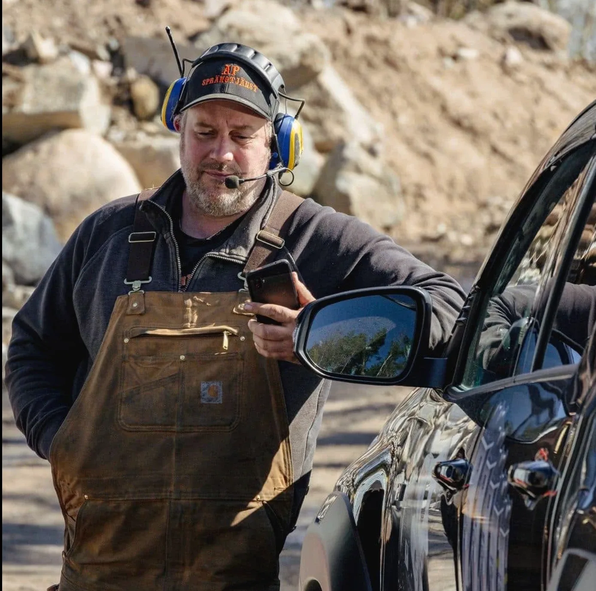

Små marginaler kräver erfarenhet
Ju närmare hus, ledningar och grannar berget ligger, desto mer hänger på planeringen. Vi har sprängt sedan 1997 och har lång erfarenhet av komplexa uppdrag, till exempel under hus där människor bor kvar.
Varje salva anpassas efter platsen. Där det är för trångt för en borrvagn borrar vi för hand, och där en salva inte passar alls kan vi i stället spräcka berget hydrauliskt.
- Inpå husknutenBerg tätt intill befintliga hus
- KällareSänka golv eller ge plats för nya utrymmen
- Under husDär de boende bor kvar under arbetet
- Trånga tomterDär ingen maskin kommer fram
- TillbyggnaderGrund för utbyggnad nära huset
- Ledningar vid husetSchakt för vatten, avlopp, el och fiber
Så går det till
Plan
Vi ser på platsen, avståndet till huset och vad som ska skyddas, och planerar salvorna därefter.
Handborr
Borrhålen sätts med handhållen luftdriven borr där maskinen inte kommer fram.
Skydd
Vi laddar anpassat, täcker med sprängmattor och säkrar området. Grannarna vet i förväg vad som händer.
Färdig yta
Det sprängda berget tas bort, med maskin där det går, så att ytan blir klar för nästa steg.


Grannarna vet vad som händer
Ett bra sprängjobb i tät bebyggelse handlar lika mycket om förtroende som om berg. Vi ser till att kunder, grannar och samarbetspartner vet vad som händer, när det händer och varför.
Ett familjeföretag sedan 1997
AP Sprängtjänst är ett familjeföretag i tredje generationen med egen maskinpark. Vi borrar, spränger och schaktar i samma lag, från villagrunder till samhällsbyggnad. Läs mer om bergsprängning.

”Det är mycket problemlösning i vårt arbete. Men vi hittar alltid en väg.”
Anders Pettersson, VD
Sprängning nära hus där du bor
Vi har många uppdrag i Stockholm, Uppsala, Västerås och Enköping, men tar uppdrag i hela Sverige. Maskiner och utrustning kommer fram till rätt plats i rätt tid, så att jobbet kan börja när det ska.
Vanliga frågor
Kan ni spränga i en källare?
Ja. Med handhållen borr, små och noggrant planerade salvor och sprängmattor kan vi spränga i källare och andra utrymmen där en borrvagn inte får plats.
Hur skyddar ni huset och grannarna?
Vi anpassar laddningen efter avståndet till huset, täcker med sprängmattor och säkrar området. Grannarna får veta i förväg vad som händer, när det händer och varför.
Vår tomt är trång, hur kommer ni in?
Där maskinen inte kommer fram borrar vi för hand med luftdriven borr. Vi behöver sällan mer plats än en person och utrustningen.
Kan huset få skador av vibrationerna?
Sprängning nära byggnader planeras efter svensk standard för vibrationer (SS 460 48 66). Vi anpassar laddningen efter avståndet till huset och går igenom med dig om besiktning och vibrationsmätning behövs innan vi börjar.
Vad behöver jag som villaägare göra?
Inte mycket. Vi söker tillstånd hos Polisen och anmäler sprängarbetet till räddningstjänsten. Du ser till att vi kommer åt platsen och berättar om ledningar, brunnar eller annat i marken som du känner till.
Kan ni spränga under ett hus där vi bor kvar?
Ja, det är uppdrag vi har gjort. Det kräver noggrann planering och erfarenhet, och vi går igenom upplägget med er innan vi börjar.
Vad gör ni om det inte går att spränga alls?
Då kan vi spräcka berget hydrauliskt, med Darda C12 för hand eller med Hirado på grävmaskinen, utan sprängämne och med små vibrationer. Läs mer om hydraulspräckning.
Var utför ni sprängning i trånga utrymmen?
Vi har många uppdrag i Stockholm, Uppsala, Västerås och Enköping, men tar uppdrag i hela Sverige.
Vad behöver ni veta för att ge en offert?
Var jobbet ligger, vad som ska göras och ungefär hur mycket berg det gäller. Bilder på berget eller tomten hjälper mycket. Skicka en förfrågan eller mejla info@ap-sprangtjanst.se, så ringer vi upp inom en arbetsdag.
Fler tjänster
Rätt sprängare från start.
Ring Anders
070-343 17 70Vi ringer upp inom en arbetsdag. Har du bilder på berget eller tomten? Mejla dem gärna till info@ap-sprangtjanst.se, så går det snabbare att ge pris.